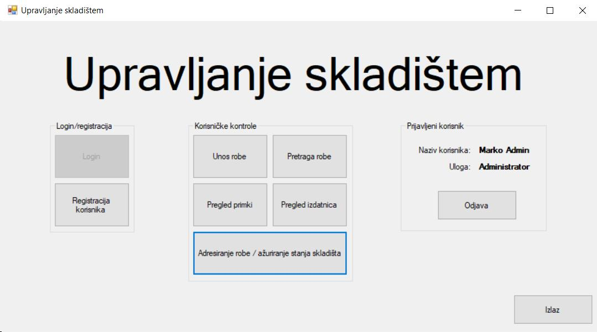

Uključenjem aplikacije prikazan je glavni meni na kojemu je moguće koristiti ponuđene kontrole za funkcioniranje aplikacije. Svaka od ponuđenih tipki otvara novi prozor koji odgovara pojedinoj funkciji aplikacije. Prije nego što su omogućene kontrole, korisnik se mora prijaviti(gumb Login). Nakon uspješne prijave, prijavljeni korisnik vidi na desnoj strani svoje ime i prezime, ulogu i gumb za odjavu.
